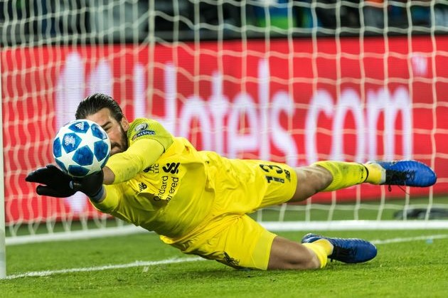
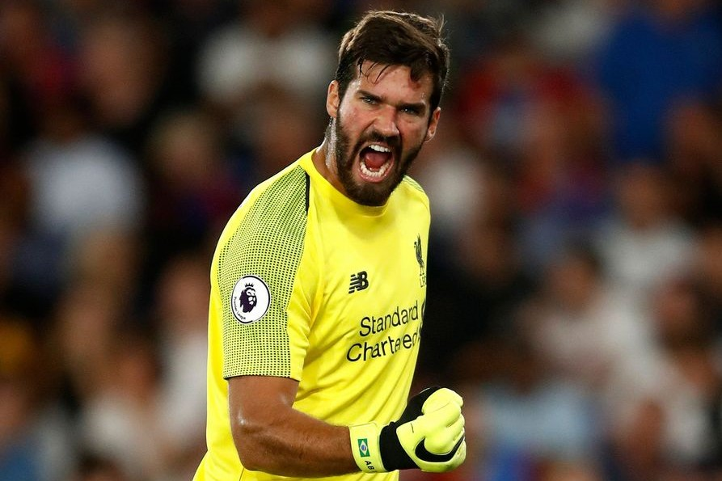
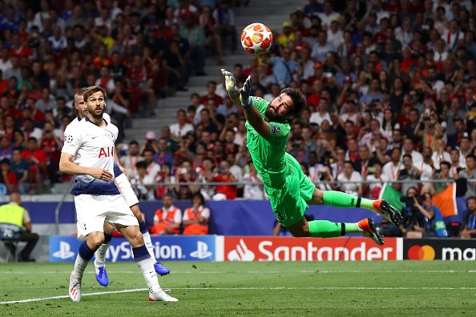

About Alisson Becker
Alisson Ramses Becker (commonly known as Alisson) is a Brazilian Goalkeeper who currently plays for the Premier League Side Liverpool FC. He was the most expensive goalkeeper of all time for some days after his $82.65m transfer from A.S. Roma. He also frequently features for the Seleção, the Brazilian National Men's Football team and has thus far accumulated 39 caps.
Timeline
- 1992: Born in Novo Hamburgo, Rio Grande do Sul
- 2002: Joins the Sport Club Internacional Youth Academy in Porto Alegre
- 2013: Makes his Senior Debut for Internacional on February 17th
- 2016: Transfers to Italian Seria A side A.S. Roma for $8.55m
- 2018: Transfers to English Premier League side Liverpool FC for $82.65m
- UEFA Champions League Winner (2019)
- Campeonato Gaúcho Title (2013, 2014, 2015, 2016)
- Champions League Squad of the Season (2018, 2019)
- Barclay's Premier League Golden Glove (2019)
- Serie A Team of the Year (2018)
- Serie A Goalkeeper of the Year (2018)
- Globe Soccer Awards Goalkeeper of the Year (2018)
- Goal 50 World's Best Goalkeeper (2018)


